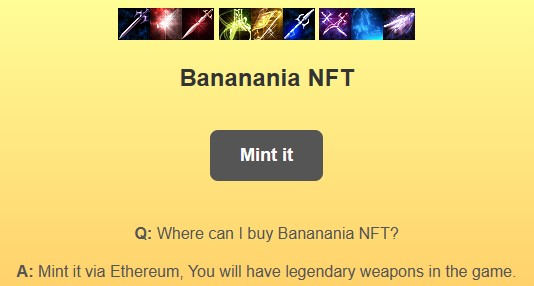
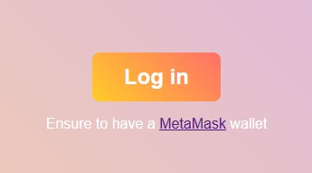
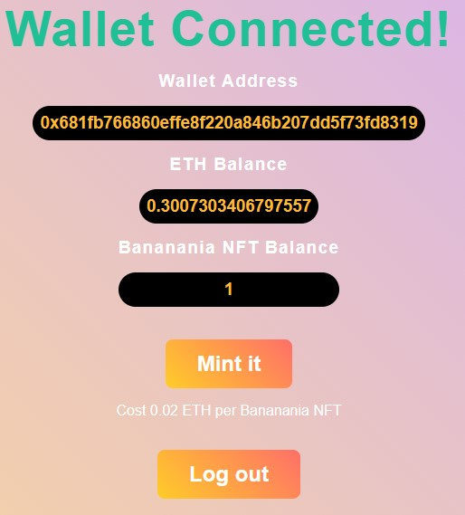

購買 BANANA NFT
0. 請先至MetaMask官網申請您個人的小狐狸錢包, 再到Maicoin官網註冊後購買ETH, 將ETH傳送至您個人的小狐狸錢包地址 (請選擇ERC20通道傳送)
1. 點選 Mint it

2. 點選 Login in 連結小狐狸錢包

3. 點選 Mint it 購買 BANANA NFT, 每個 NFT 需花費 0.02 ETH + Gas 交易手續費

3. 購買後或離開購買頁面之前, 請點選 Login out, 登出小狐狸錢包
4. 線上通知"香蕉GM"或email: banananiagm@gmail.com, 經查詢etherscan.io區塊鏈核對後, 將立即回饋 +10 頂級特武至您遊戲中"錢包角色ID"身上, 如錢包地址為0x681Fb..., 請新增"錢包角色ID"為681FB(全部大寫)
恭喜您, 您已經學會使用區塊鏈與擁有NFT了!!